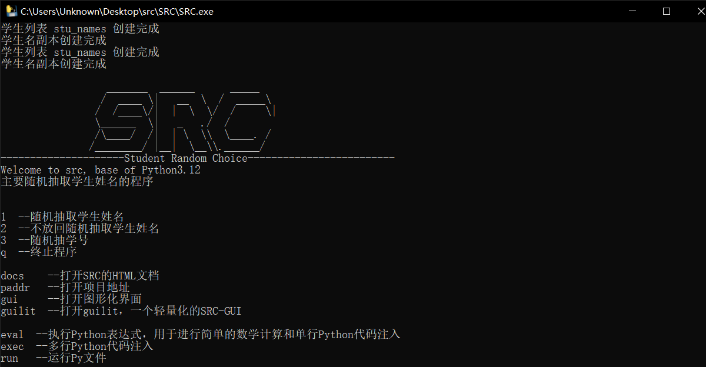

运行src/SRC/SRC.exe，打开SRC command-line，你将看到以下输出

当你的输入不属于帮助信息中的任何一条时，SRC返回提示信息
这提醒你输入 h 查看帮助信息
mode> sm
!!!ERROR INPUT!!! "sm" not a legal command, pleas input "h" to watch help message
!!!错误输入!!! "sm"不是合法指令，请输入"h"以查看帮助信息
mode>
mode> h
1 --随机抽取学生姓名
2 --不放回随机抽取学生姓名
3 --随机抽学号
q --终止程序
docs --打开SRC的HTML文档
paddr --打开项目地址
gui --打开图形化界面
guilit --打开guilit，一个轻量化的SRC-GUI
eval --执行Python表达式，用于进行简单的数学计算和单行Python代码注入
exec --多行Python代码注入
run --运行Py文件
mode>
随机抽取学生姓名，这将可能返回重复的学生姓名
mode> 1
随机有放回抽取，这可能会返回重复的学生名，输入“q”终止
"q"终止>
小明
"q"终止> q
mode>
不放回随机抽取
mode> 2
不放回随机抽取，前缀为剩余的学生数量，输入数字进行多次抽取，“q”终止
6>
小红
5>
小明
4> 3
小军
小丽
小李
1> q
mode>
随机抽学号，可能抽到重复的学号，范围为 randint(1, len(stu_names))
使用默认浏览器打开SRC的静态HTML文档，这将会打开 src/docs/SRC基本配置和使用.html
打开SRC的项目地址：https://www.github.com/yunjiao20/SRC
打开SRC-GUI界面，SRC自带SRC-GUI，他们共用相同的Python源码
打开SRC-GUIlit，这实际上运行文件 src/SRC-GUIlit/SRCGUIlit.exe ,这是一个轻量化的SRC-GUI，但他 并不内置在SRC中，启动它将会启动一个新的进程，这可能会花费更长时间